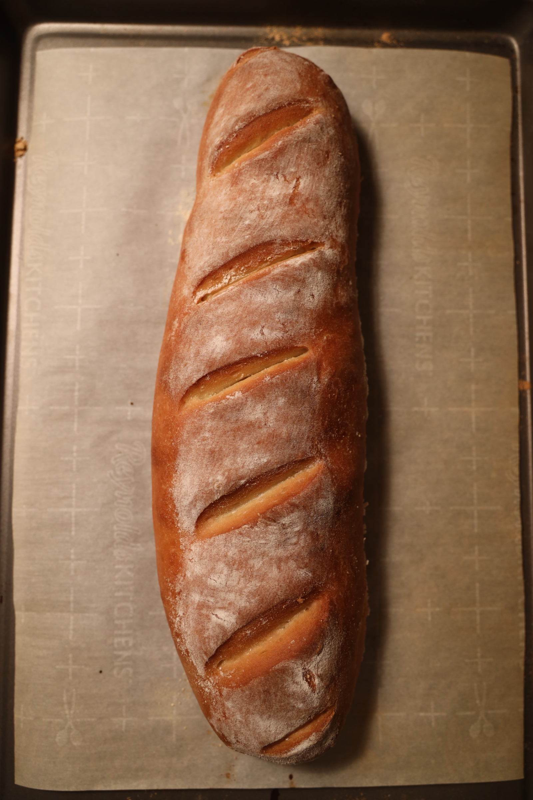
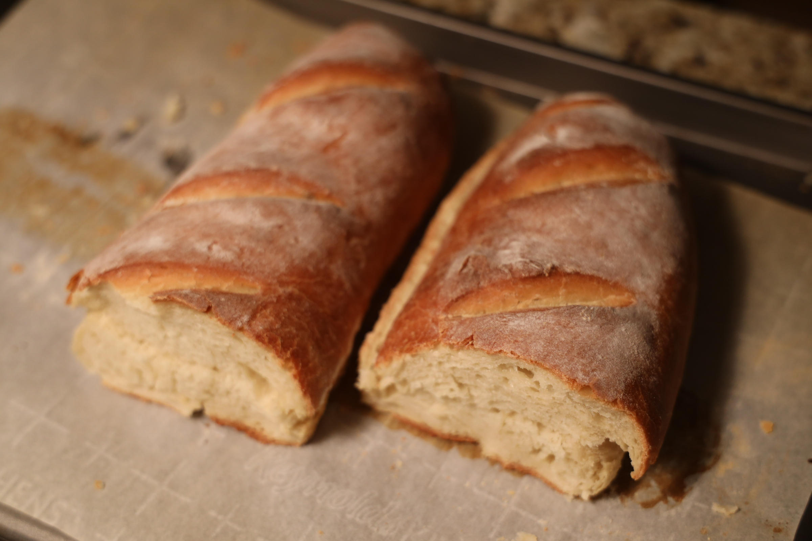
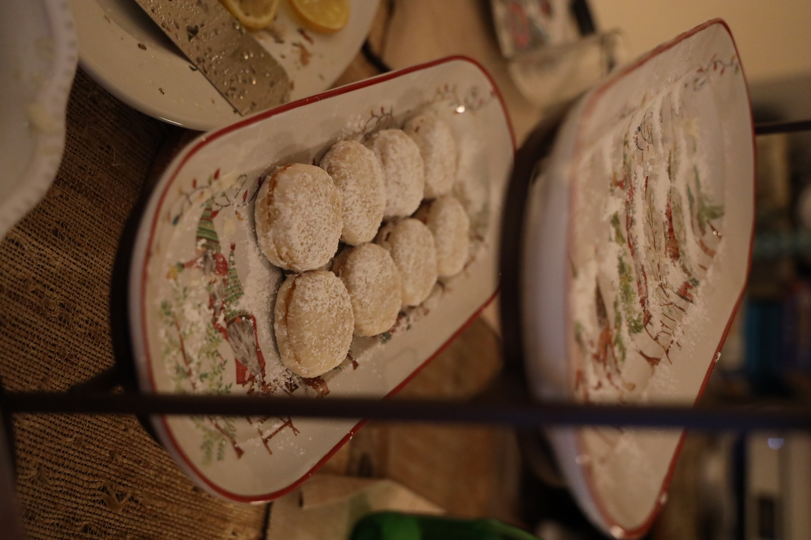
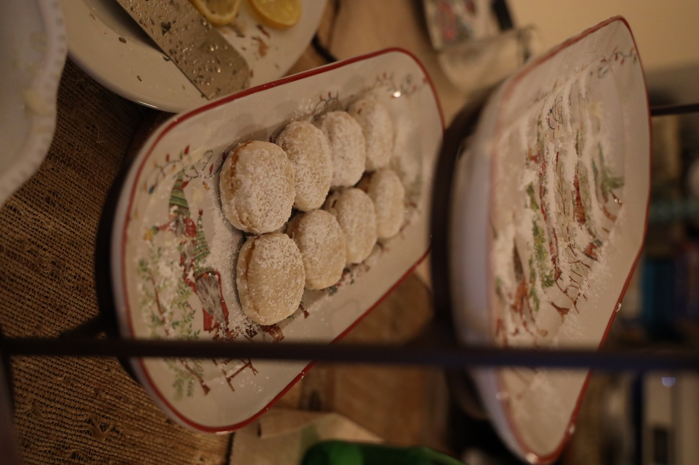

'99. za vreme bombardovanja smo mi, deca iz moje ulice, svako jutro ranili pre 6 i biciklima se vozili u drugi kraj sela u pekaru po svež hleb. Nijedan hleb, igde, ikada, nije bio ukusan kao taj hleb. Svako jutro
pre svitanja. Stižemo zadihani. Sve do neba miriše na toplo testo. Proveravam da li je bon još uvek u džepu i ulazimo jedno po jedno. Peć greje, posvuda je brašno. Čekamo u redu da preuzmemo svoje vekne koje tek
što izaze iz peći, i mislimo kako ćemo u povratku "štipkati" onako još uvek vruć hleb. Okrećemo pedale, i okrećemo ih sve brže, jurimo kući. Osmeh zadovoljstva je na licu. Još uvek nije svanulo. Izlazi toplota iz
hleba, a hrskava korica topi se u ustima. ...
E baš takav jedan hleb sam ja danas umesila i ispekla u Kaliforniji. Moj prvi hleb.
Podseća na detinjstvo. Podseća na sve što volim najviše.
Decembar 22, 2020

Sastojci:
brašno, 350gr
suvi kvasac, 5gr
so, 1 kafena kašičica
šećer, 1 kafena kašičica
ulje, 30ml
voda, 210ml mlake vode

Način pripreme:
Kvasac i šećer rastopiti u malo tople vode.
Dodati 30ml maslinovog ulja.
Dodati 30ml maslinovog ulja.
Dodati kafenu kašičicu soli.
Sve to izmešati, i dodati preostalu vodu.
Postepeno dodavati brašno, tačno 350gr brašna.
Razmesiti testo sa nauljenim dlanovima.
Biće i treba da bude lepljivo, ali ne sme uopšte da se lepi za ploču na kojoj mesiš.
Napravi ga da bude meko.
Ostaviti sat vremena da naraste.
Opet razvući ubodima prstiju.
Testo ne bi trebalo da se rasklagija, već prstima lagano da se razvuče i onda urola u veknu.
Premazati mlekom i ostaviti da stoji 20ak minuta dok još malo sama vekna ne naraste.
Nakon 20 minuta, ponovo premazati mlekom da bi se uhvatila deblja hrskavija korica.
Na kraju posuti brašnom.
Koristi četkicu za razmazivanje brašnom po vekni, kako brašna nigde ne bi ostalo previše.


 
